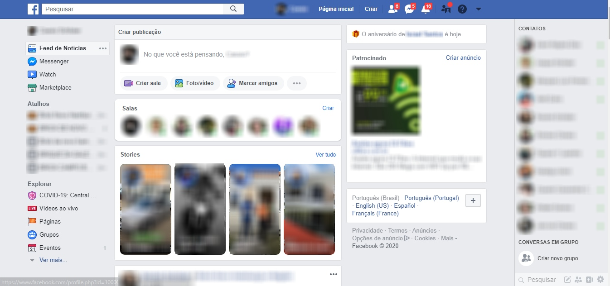
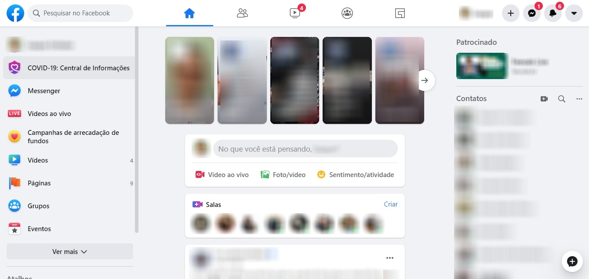

|  |  |
|---|---|
| ✅[CORRETA] Interface clássica | ❌[ERRADA] Interface nova |

Na nova interface, clique no [1] botão localizado no canto superior
direito, em seguida, clique em [2] "Mudar para o Facebook clássico", como
demonstrado na imagem acima.